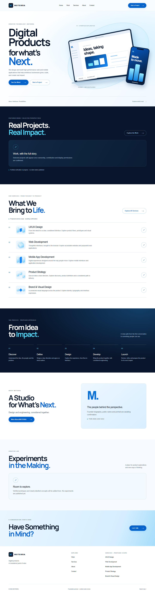
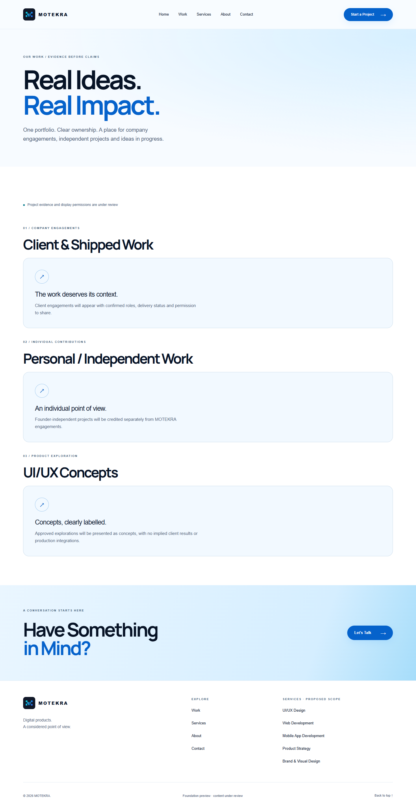
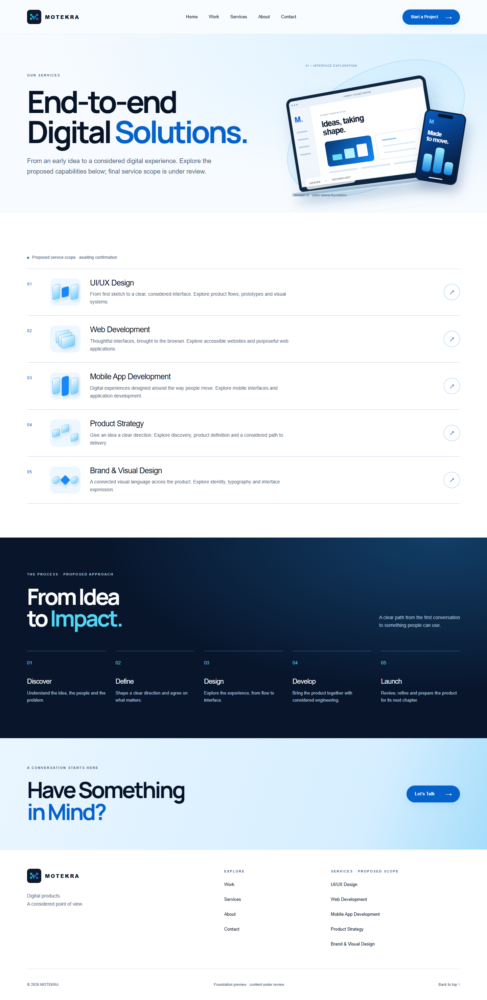
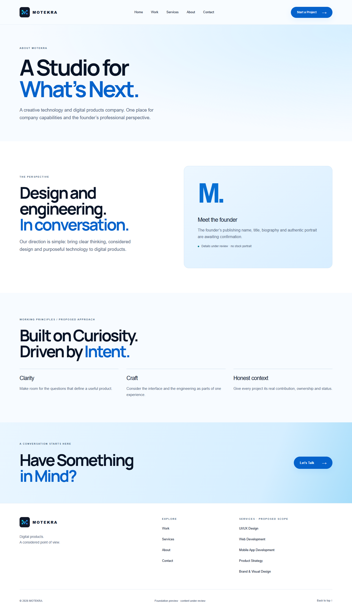
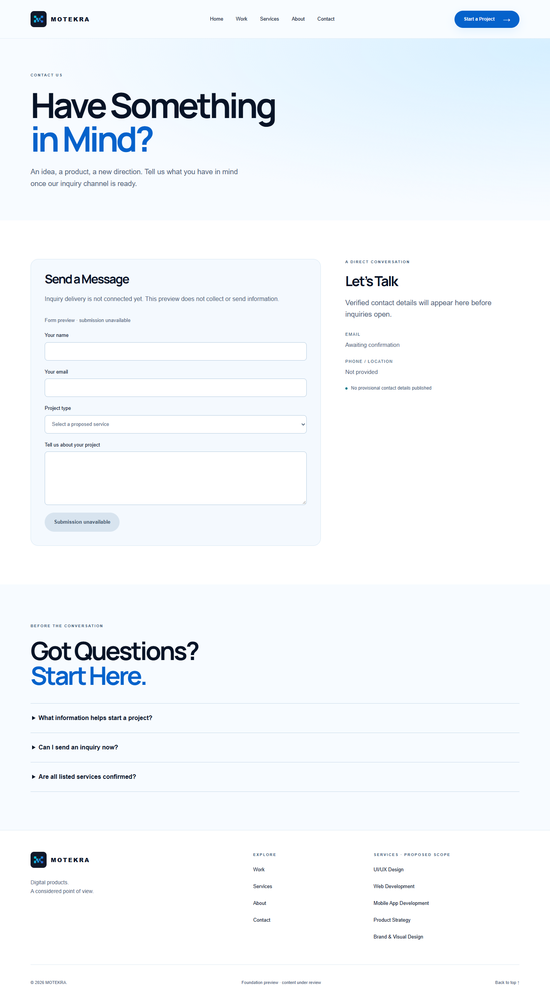

home



Responsive foundation evidence. Real mark; draft content clearly labelled. Heavy animation, approved work and portrait are later-phase requirements.





No JavaScript / reduced motion · Native navigation without JavaScript